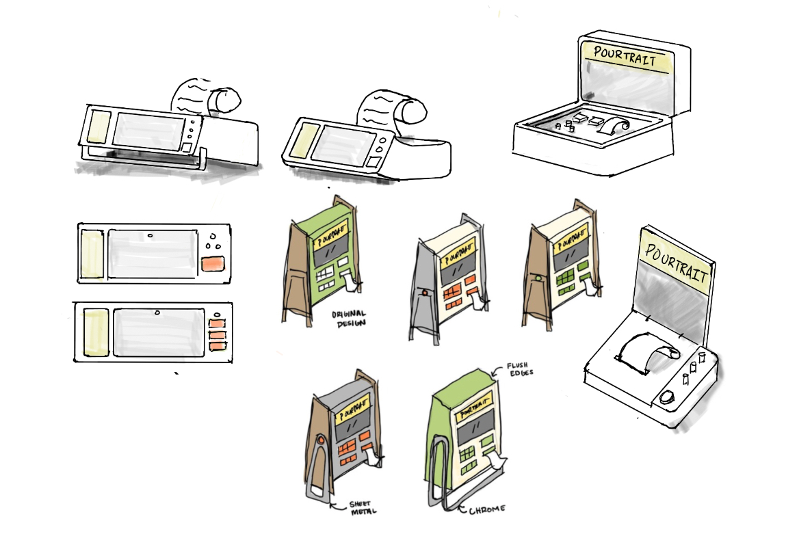
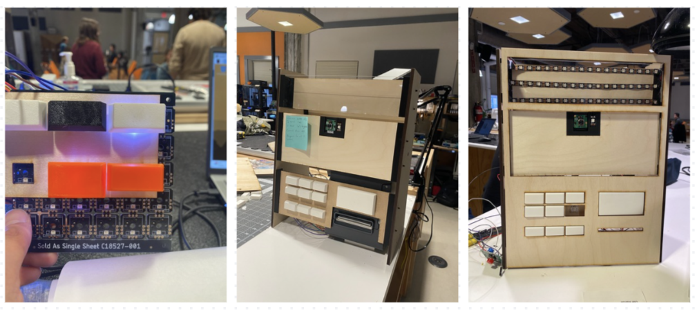

Design • Engineering • Manufacturing
Ordering drinks at a crowded bar is often rushed and impersonal. Guests scan menus, guess at what they might like, and default to the same safe orders.
The team at Pourtrait wanted to design something that felt more playful and social. Something that could break the ice and turn ordering into an experience rather than a transaction.
Pourtrait is a bartop device that captures a photo of you and your friends, analyzes the moment, and prints a receipt-style keepsake with personalized cocktail recommendations. Part photo booth, part sommelier, part conversation starter, Pourtrait transforms drink discovery into a memorable ritual.
"Rams, Braun, Teenage Engineering" were the directions and inspiration given by the team at Pourtrait. With the function of the device in mind, the device needed to fit in on the bartop, but stand out to invite patronage. A device that feels approachable, intriguing, timeless with novelty.
We built a mood board exploring similarly-sized devices that evoked such emotions.
The moodboard guided the design language of the product: minimal, boxy silouhettes, thin wooden side panels, frosted light panels, bent aluminum faces, tactile phyiscal buttons, singular colour accents etc.
Our early concepts revolved around how the device would live on a crowded countertop, and how a group of friends may gather around the product.
How would guests naturally gather around it for a photo?
How can the camera feel obvious without being intrusive?
How does the product commmunicate "take photo → get drink suggestions” intuitively?
We explored multiple form factors exploring:
upright kiosks - eye catching, evoking arcade game interactions
low-profile edges - sleek, sits comfortably amongst bartops
(adjustable) angled-front face for eye-level interaction - usability for large groups
size & layout of buttons - inviting to press, easy to understand amongst constant chatter
etc. etc. etc...
CAD and render iterations focused on proportion, materials, and user interfaces.
clean powder-coated front aluminium panel
warm wood sides to soften the silhouette
Frosted light panels
Minimal seams and fasteners
Single, clear printed receipt slot
By simplifying the front surfaces and hiding all complexity behind a single pane, the interaction flow became intuitive: stand → smile → receive
The primary engineering challenge was packaging the multiple subsystems into a compact bartop footprint:
camera + lighting
small embedded computer
thermal receipt printer
power + cabling
All electronics are designed to be hidden, maintaining a seamless exterior while ensuring reliability and minimizing tampering risks. The engineering process included rapid prototyping with mid-fidelity mockups:
Pourtrait was designed for small-batch production and future scalability.
Core features and manufacturing processes selected to optimize assembly and cost-efficiency:
Bended aluminium sheet metal
2.5 axis CNC-cut hardwood side panels
Minimal hardware count
Easy printer swap and serviceability
The final build assembles quickly, affordable at small batches and at scale, while preserving a refined appearance for durability and a premium feel.
Pourtrait blends into the environment like a classic piece of bar equipment, yet surprises users with a delightful, modern interaction.
In early testing with bars and company parties, it quickly became the talk of the event and receives raving reviews.
By encouraging group participation, simplifying drink discovery, creating a tangible souvenir everyone in the group can enjoy, Pourtrait enhances social experiences and elevates the moment.